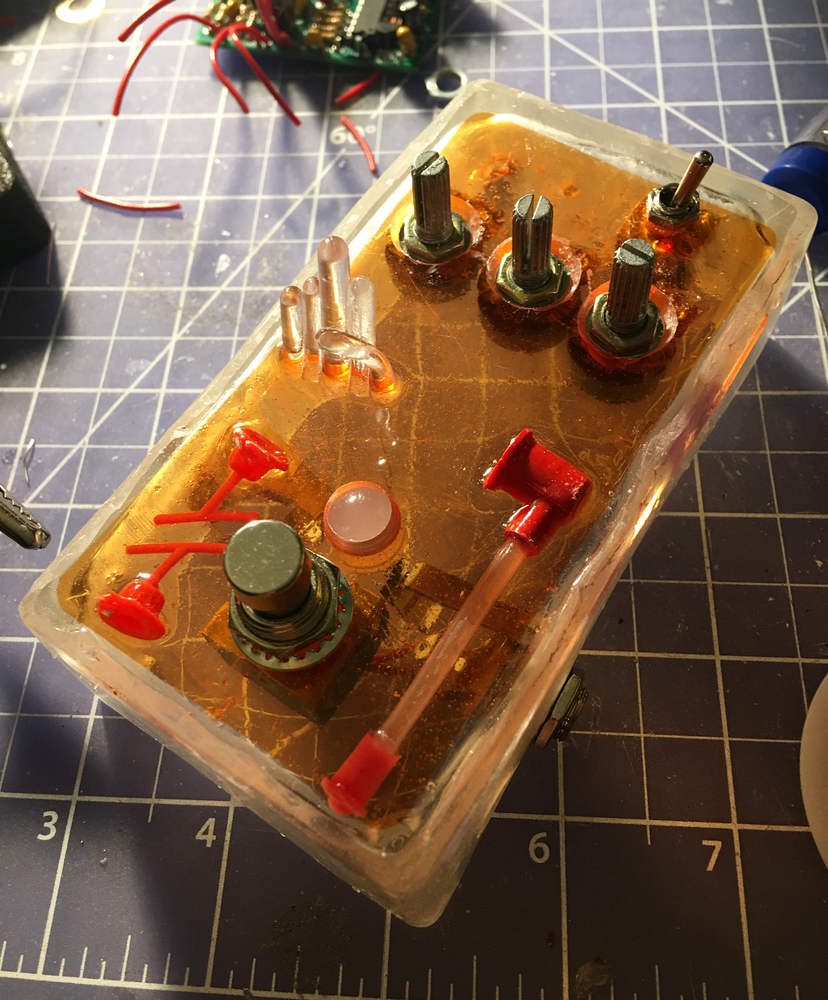
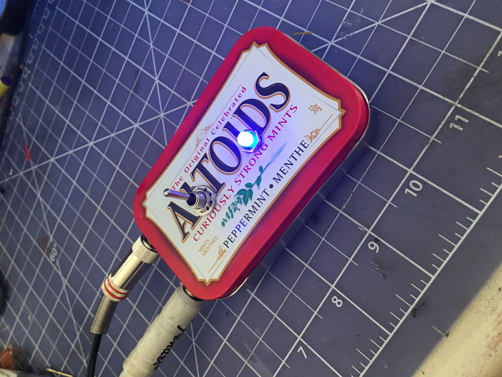
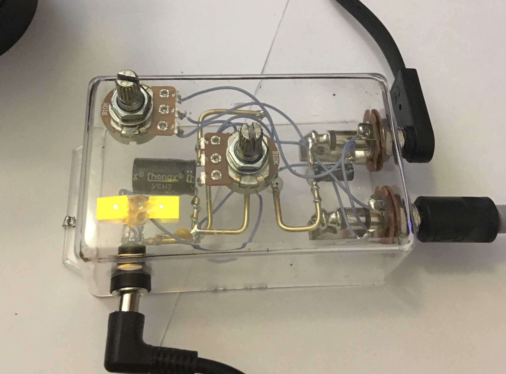

this is a simple fuzz circuit embedded in epoxy resin.


[electronics / sculpture]
perpetually a child, I'm still amazed when you can solder some things together and it can actually change how a sound signal sounds. here are some analog electronic projects (some still in progress)
this is a simple fuzz circuit embedded in epoxy resin.
this is a jelly enclosure for a zero point dd
this is a buffer thrown in an altoids tin
this is a simple boost
this is a dollarama reverb tank

this is a mystery object

this is a fridge magnet